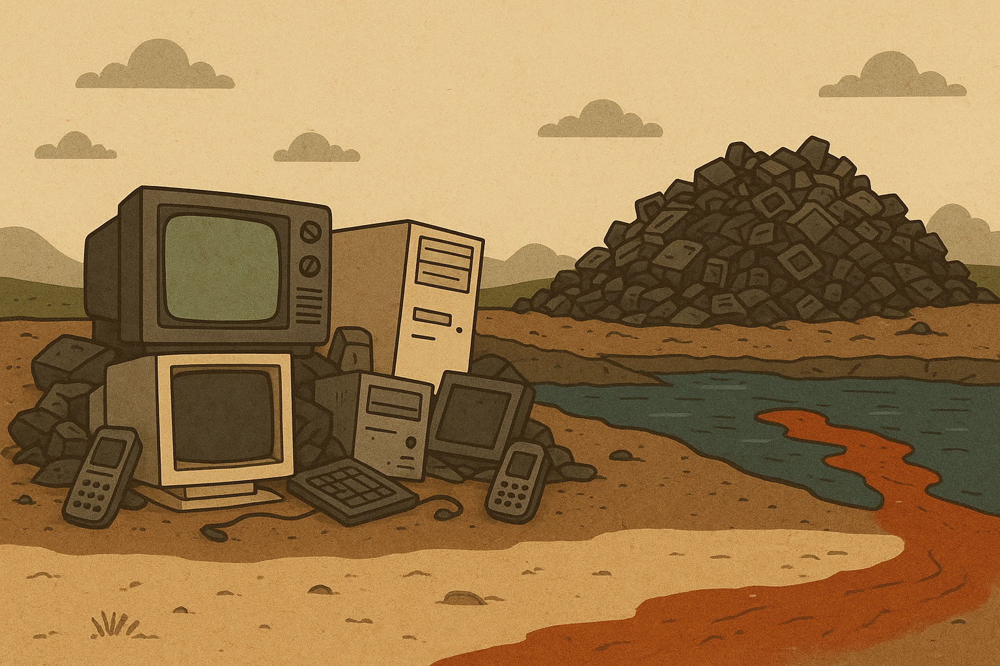
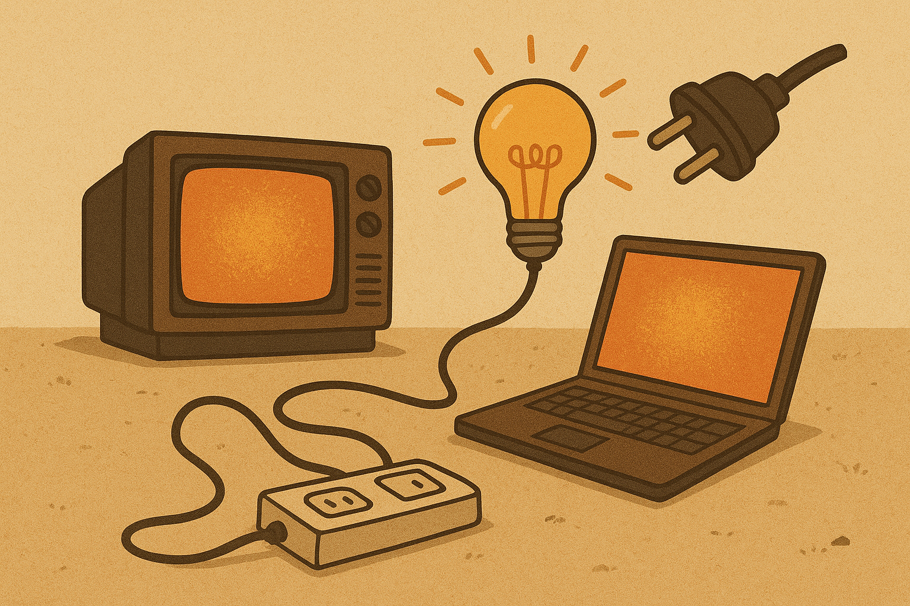
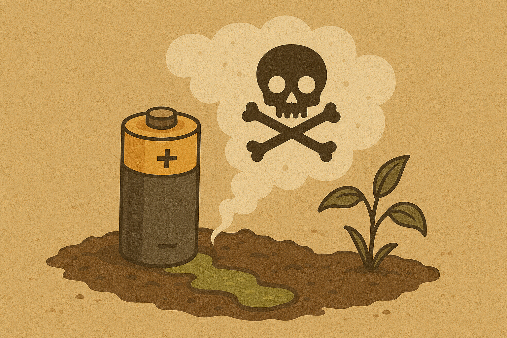
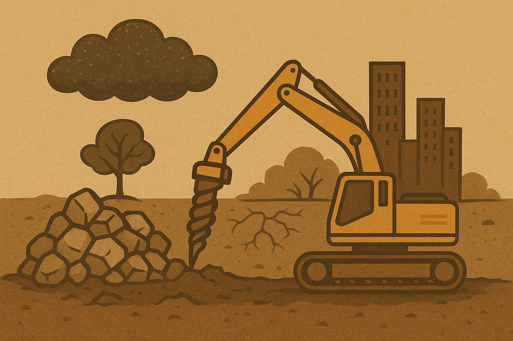

La tecnología ha transformado nuestras vidas, pero también impacta el planeta. Con soluciones sostenibles podemos lograr un futuro más verde.
Toneladas de desechos electrónicos se generan cada año.
De los desechos electrónicos no se reciclan adecuadamente.
De la energía mundial aún proviene de fuentes no renovables.
Los aparatos en desuso generan millones de toneladas de basura contaminante.
Los desechos electrónicos contienen metales pesados como plomo y mercurio que contaminan el suelo y agua.
Dejar dispositivos encendidos cuando no se usan gasta energía.
El consumo innecesario contribuye al gasto de energía global, elevando la huella de carbono.
Las pilas liberan químicos dañinos al medio ambiente.
Las pilas tardan cientos de años en degradarse y liberan tóxicos peligrosos al entorno.
La producción tecnológica depende de minerales y recursos finitos.
El crecimiento tecnológico sin control acelera la extracción de minerales y afecta los ecosistemas.
Apaga los equipos cuando no los uses y optimiza su consumo eléctrico.
Usar paneles solares o energía eólica para alimentar dispositivos.
Aplicar innovaciones que reduzcan la huella de carbono.
Promover centros de recolección y donación de electrónicos.